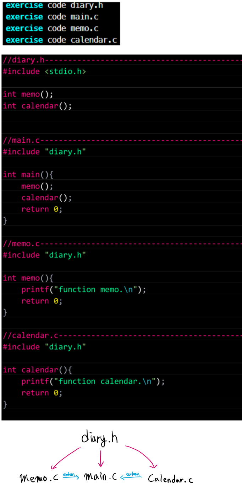
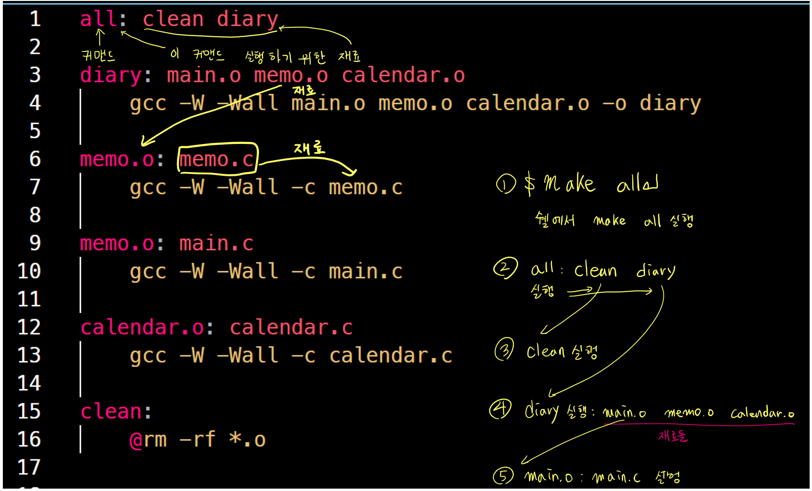
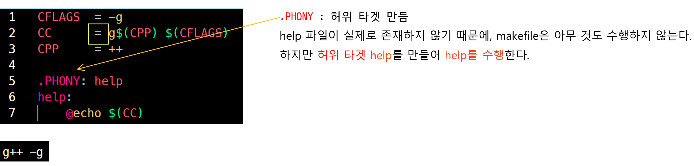
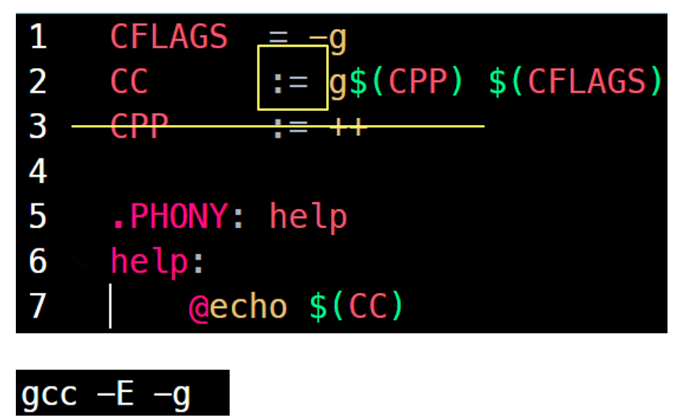
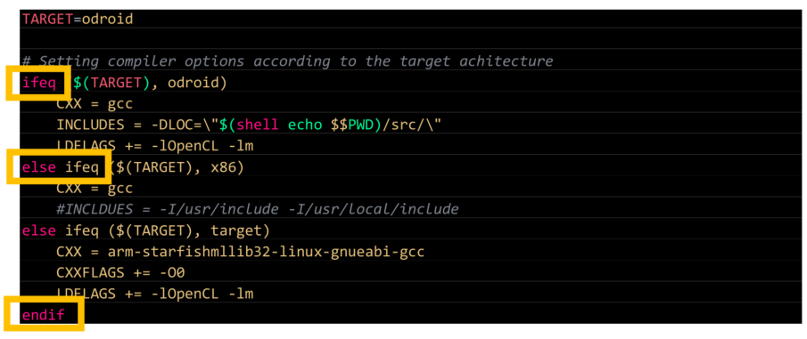
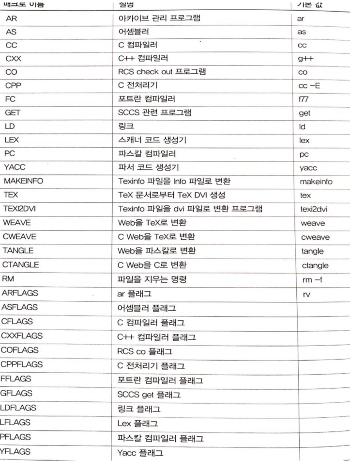
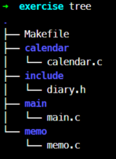
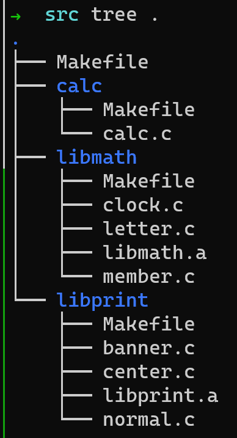

컴파일 <2> Makefile
Makefile 작성법
C 컴파일
- 3개의 c 소스코드와, 1개의 h 파일이 있다고 가정한다.

- 노가다로 하나씩 컴파일 한다면?
$ gcc -c calendar.c diary.h
$ gcc -c main.c diary.h
$ gcc -c memo.c diary.h
calendar.o main.o memo.o # object파일 생성
$ gcc main.o memo.o calendar.o -o diary
diary # diary binary file 생성
- .o파일을 일일히 만드는 이유는?
- Make는 파일의 타임스탬프를 만든다.
- 소스 파일이 수정됬다면 해당 파일의 타임스탬프가 갱신된다.
- 오브젝트 파일이 더는 최신이 아니며, 갱신할 필요가 있다고 판단해 재컴파일한다.
- 소스 파일이 수정되지 않았다면 오브젝트 파일을 또 만들지 않는다. 중복 피함
Makefile 작성
쌩기초 Makefile
- 파일명은
Makefile할 것

- 타겟 커맨드: 소스1 소스2
\t명령어 1\t명령어 2
기본 문법
=: 대입, 사용하기 직전까지 대입문내 매크로 갱신
- 사용직전까지 매크로를 갱신 시켜줌
:=: 대입, 딱 여기 라인까지만! 아래는 신경안씀
- 사용 이후 매크로를 갱신 X
?=: 이 매크로가 정의되지 않았을 경우에만 반영
Makefile
1: CXX = hello1
2:CXX ?= hello2# <- 이미 위에 CXX가 정의되어 있으므로, 무시된다.
3: CC ?= hello3- CXX: hello1, CC: hello3
-
make -p : make파일 내부에 미리 정의되어 있는 매크로 출력
- NAME=
"string"따옴표로 묶으면, 문자열로 인식- " " 신경 잘 써야함
- "<- 자체도 문자로 넣고 싶다면
\"사용
- 매크로 변수 사용
$(매크로변수)
ifeq endif
ifeq ($(매크로1), 비교 값)
- 매크로1이 비교 값과 같다면 실행
else
- 아니라면 else문 실행
endif
ifneq ($(매크로1), 비교 값)
- 매크로1이 비교 값과 다르면!! 실행
else
- else문 실행
endif
ifeq ($(매크로), 비교 값)
- 매크로가 비교 값과 같다면 실행
else ifeq ($(매크로), 비교 값)
- 매크로가 비교 값과 같다면 실행
endif

미리 지정되어 있는 매크로들

C 컴파일러를 gcc가 아닌 clang을 사용하고 싶다면
Makefile내에서 CC를 재정의 할 것
CC = clang
내부 매크로 $? $^ $@ …
| macro | description |
|---|---|
| $? | 현재의 타겟보다 최근에 변경된 종속 항목 리스트 (확장자 규칙에서 사용 불가) |
| $^ | 현재 타겟의 종속 항목 리스트, 한 마디로 재료! (확장자 규칙에서 사용 불가) |
| $@ | 현재 타겟 이름 |
| $< | 현재의 타겟보다 최근에 변경된 종속 항목 리스트 (확장자 규칙에서만 사용 가능) |
| $* | 현재의 타겟보다 최근에 변경된 현재 종속 항목의 이름(확장자 제외) (확장자 규칙에서만 사용 가능) |
| $% | 현재의 타깃이 라이브러리 모듈일 때, .o 파일에 대응되는 이름 %.o: %.c <– .o 확장자를 제외한 파일명이 .c에 대응하는 것을 만났을 때 |
| -M | 소스코드 파일에 상응하는 오브젝트 파일을 생성하는데 필요한 규칙을 얻는다. |
| -MM | 소스코드 파일에 상응하는 오브젝트 파일을 생성하는데 필요한 규칙을 얻되, 시스템 헤더 파일을 생략한다. gcc -MM calc.c calc.o: calc.c numbers.h 결과를 얻는다. 단 gcc 커맨드에 의해서! |
다음과 같이 엄청 자주 쓰인다.
%.o: %.c
%.o: %.c
command
a.o b.o: %.o: %.c
command for a.o b.o
c.o d.o: %.o: %.c
command for c.o d.o
SRCS = memo.c main.c calendar.c
OBJS = $(SRCS:.c=.o)
- SRCS내
.c파일 =>.o로 OBJS에 대입
.PHONY
-
Makefile 커맨드에서 어떠한 선행 파일 X 경우, 허위 타겟을 만들어야한다.
-
.PHONY 역할
- 허위 타겟역할을 한다.
- make help를 입력하면 help라는 파일이 존재치 않아 셸은 그 파일을 만들려고 하지 않는다.
- 이때 PHONY는 허위 타겟 역할을 한다.
- 허위 타겟 명령은 타임스탬프 정보가 없다.
- 따라서 help 명령이 호출될 때 마다 실행
- 허위 타겟역할을 한다.
wildcard
SRCS = memo.c main.c calendar.c <- 이거도 귀찮다
SRCS = $(wildcard *.c)
OBJS = $(SRCS:.c=.o)
- wildcard는 *, ? 등 shell의 wildcard를 사용할 수 있는 makefile 함수
- SRCS = *.c 로 하면 진짜 *.c 파일을 검색함
만약 src 폴더 내의 .c 로 검색한 파일을 다 가져 오고 싶다면?
SRCS = $(wildcard src/*.c)
OBJS = $(SRCS:%.c=%.o)
patsubst
dst = $(patsubst 패턴, 변경 문자열, 소스 문자열)
dst = $(patsubst %.c, %.o, $(wildcard *.c))
-
wildcard로 *.c 파일을 검색해 %.c에 매칭이되는 것은 %.o로 치환
-
sub directory에 있는 경우
SRCS = $(patsubst %.c, $(SRCDIR)/%.c, $(wildcard $(SRCDIR)/\*.c))
OBJS = $(SRCS:%.c=%.o)
filter
- 리스트에서 특정 패턴만족 단어 반환
SRCS = calc.c main.c math.h lib.c
C_SRCS = $(filter %.c, $(SRCS))
# C_SRCS = calc.c main.c lib.c
addprefix
- 리스트에서 서두에 문자열 추가
- 다음 예제는 $(OBJECTS) 리스트의 각 요소 서두에 objs/를 추가한다.
OBJECTS = calc.o main.o lib.o
OBJ_LIST = $(addprefix objs/, $(OBJECTS))
# OBJ_LIST = objs/calc.o objs/main.o objs/lib.o
shell
- 컴파일 중 shell 명령을 사용할 때 $(shell
쉘 명령) 으로 사용target: src $(shell echo "hello world!") -
원래 $HOME 이라고 쓸 shell 명령을 Makefile 내에선 $(shell
$${쉘변수})사용한다. - 따라서, $(shell $${HOME}) 같이 사용하면된다.
target: src $(shell echo $${HOME})- 예를 들어, 환경변수에 $SYSROOT=/opt/cross-compile 로 되있다면,
CFLAGS = --sysroot=$(shell echo $$SYSROOT)) - 쉘에 echo $SYSROOT 쳐서 나온 값이 --sysroot 로 정의된다.
- 예를 들어, 환경변수에 $SYSROOT=/opt/cross-compile 로 되있다면,
명령 사용 규칙
기본 규칙
TARGET: hello
all:
echo $(TARGET)
위 명령 실행 시, Makefile은 실행 전 명령어를 그대로 쉘에 띄움
그래서 실행 시,
echo hello # Makefile이 실행 직전 실행할 명령어 그대로 띄움
hello # echo "hello"에 의해 출력된 hello
@명령은에코 기능을 끈다- 원래 Makefile은 자기가 실행하려고 하는 명령어를 그대로 쉘에 띄운다.
이 기능을 금지 시킨다. - 끄지 않으면, 셸에 띄워진 커맨드가 실행 완료 됬다고 착각 하기 때문
all:
@echo $(TARGET)
hello # echo "hello"에 의해 출력된 hello
명령어 한 줄은 새로운 셸이다.
clean:
cd ./backup
rm -rf *
- 의도: ./backup 디렉터리의 모든 파일을 지운다.
- 실제 실행: 현재 디렉터리의 모든 파일이 지워짐
- 이유: 두 명령어가 서로 다른 쉘에서 실행되기 때문이다.
그래서… 아래처럼 고친다.
clean:
cd ./backup && rm -rf *
오류가 나도 계속 실행 시키고 싶다
-
Makefile은 한 줄씩 실행 하면서, 하나라도 return 0가 안된 명령이 있으면
실행 종료한다. -
딱히 중료한 명령이 아니면
-를 붙여서 명령이 실패해도 계속 실행하게 한다.
cat:
-cat file.txt
@echo done
- ’-‘ 때문에 file.txt를 cat명령어로 못 읽어도, 계속 실행된다.
재귀적 Makefile 사용

다음과 같이 최상위 디렉터리에 Makefile이 있고, 서브 디렉터리마다 소스코드가 있는 경우
각 디렉터리의 Makefile은 다음과 같이 작성한다.
TARGET = buildt-in.o
OBJS = $(patsubst %.c, %.o, %(wildcard *.c)
CFLAGS = -I../include
all: $(OBJS)
$(LD) -r $(OBJS) -o $(TARGET)
clean:
rm -rf *.o $(TARGET)
최상위 Makefile은 아래와 같다.
TARGET = diary
SUBDIRS = calendar main memo
OBJS = carlendar/built-in.o main/buildt-in.o memo/built-in.o
all: compile $(OBJS)
$(CC) $(OBJS) -o $(TARGET)
compile:
@for dir in $(SUBDIRS); do \
make -C $$dir || exit $?;
done
clean:
@for dir in $(SUBDIRS); do \
make -C $$dir clean;
done
rm -rf *.o *.i *.s $(TARGET)
문장이 이해가 안가면, 쉘 스크립트 공부하자
VPATH를 이용하면, 좀 더 간결하게 할 수 있다.
VPATH = calendar main memo
OBJS = calendar.o main.o memo.o
CFLAGS = -I./include
all: clean diary
diary: $(OBJS)
$(CC) -o $@ $^
clean:
rm -rf *.o calendar/*.o main/*.o memo/*.o diary
VPATH 지정 시, make가 소스 파일들을 찾을 때 VPATH도 보고 찾아감
서브 makefile에 대한 매크로 전달
최상위 Makefile에서 $(CC)를 다른 걸로 바꿔도 서브 디렉터리의 Makefile에는 영향을 끼치지 않는다. 서브 디렉터리에게 영향을 끼치고 싶으면 export로 환경변수를 줘야함
$ export CC=clang
Makefile example1: 단일 디렉터리 컴파일
SRCS = add.c calc.c mult.c sub.c
PROG = calculator
CC = clang
CFLAGS = -W -Wall
OBJS = $(SRCS:.c=.o)
all: clean $(PROG)
$(PROG): $(OBJS)
$(CC) $(CFLAGS) $^ -o $@
$(OBJS): number.h
clean:
@rm -rf *.o
Makefile example2
SRCS = add.c calc.c mult.c sub.c
PROG = calculator
CC = gcc
CFLAGS = -W -Wall
OBJS = $(SRCS:.c=.o)
all: clean $(PROG)
$(PROG): $(OBJS)
$(CC) $(CFLAGS) $^ -o $@
-include $(SRCS:.c=.d)
%.d: %.c
@$(CC) -MM $(CPPFLAGS) $< | sed 's#\(.\*\)\.o: #\1.o\1\.d: #g' > $@
clean:
@rm -rf *.o
재귀 Makefile example3

- 4개의 Makefile
- 1개의 상위 Makefile, 나머지 libmath, libprint, calc 하위 Makefile
- 각 Makefile 현 디렉터리에 있는 파일만 기술하면 된다.
libmath/Makefile
SRCS = clock.c letter.c number.c
LIB = libmath.a
CC = gcc
CFLAGS = -g
OBJS = $(SRCS:.c=.o)
$(LIB): $(OBJS)
$(AR) cr $(LIB) $(OBJS)
$(OBJS): math.h
.PHONY: clean
clean:
rm -f $(OBJS) $(LIB)
libprint/Makefile
SRCS = banner.c center.c normal.c
LIB = libprint.a
include lib.mk
$(OBJS) = printers.h
.PHONY: clean
clean:
rm -f $(OBJS) $(LIB)
- libprint/Makefile은 libmath/Makefile과 비슷하므로 간략하게 작성한다.
calc/Makefile
SRCS = calc.c
PROG = calculator
LIBS = ../libmath/libmath.a ../libprint/libprint.a
CC = gcc
CFLAGS = -g
OBJS = $(SRCS:.c=.o)
$(PROG): $(OBJS) $(LIBS)
$(CC) -o $@ $^
.PHONY: clean
clean:
rm -f $(OBJS) $(PROG)
상위 Makefile
.PHONY: all
all:
$(MAKE) -C libmath
$(MAKE) -C libprint
$(MAKE) -C calc
.PHONY: clean
clean:
$(MAKE) -C libmath clean
$(MAKE) -C libprint clean
$(MAKE) -C calc clean